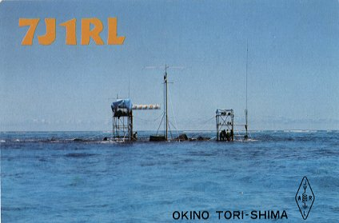

1976年の6m入感状況
[DX Report Jan-Dec.1976]
TIME:JST(UTC+0900)
Report from JA1RJU (PM95sq)
◎1976年(昭和51年)はサイクル20のボトム(最低期)。サイクル21へ期待。

01-31.Jan.1976
◎50MCでは海外とのDX QSOは無し。
01-28.Feb.1976
◎50MCでは海外とのDX QSOは無し。
01-31.Mar.1976
◎50MCでは海外とのDX QSOは無し。
01-30.Apr.1976
◎50MCでは海外とのDX QSOは無し。
01-08.May.1976
◎50MCでは海外とのDX QSOは無し。
09.May.1976
HL9WI 17:20 50.110 SSB
31.May.1976
◎JARL創立50周年を記念して、沖ノ鳥島(Okino Torishima)から7J1RLが運用。
当時、沖ノ鳥島はDXCCのニューカントリーとして加えられたが、その後DXCCから削除され消滅カン
トリーとなった。但し、6mのDXCCでは消滅カントリーもカウントする事になったためこのQSOは貴重
なものとなった。07:30-10:00JST、14:00-16:00JSTの2度のオープンがあった。
7J1RL 07:40 50.150 SSB QSO (6m #0**)


01-30.Jun.1976
◎50MCでは海外とのDX QSOは無し。
08.Jun.1976
KH6IJ 07:19 50.115 CW QSO (6m #018)
◎早朝(06:40JST)にこの時期としては珍しく突然ハワイのKH6IJが50.110MHzで入感。KH6IJ・野瀬さんから
の情報によると、6mでJAとQSOするのはサイクル19の1957年以来との事。
この日は18:30z頃から北米でKH6EQIのBeaconが入感、K6DYDからの連絡で18:33-18:42zの15分間のオープ
ンでK6DYD.WA6JRA.W6ABN等とQSOしたと。この後、北米方面にアンテナを向けて21:40z(06:40JST)CQを出
したところJA2QBZに呼ばれこの日のJA'sとのQSOが始った。
KH6IJが06:40-08:15JSTにQSOしたJAは14局＝JA2QBZ.JH3KDZ.JA4DJL.JR2RRK.JR2HCB.JA1RJU.JA4KJO
JA3ETI.JA1LZK.JE1RXJ.JA4MBM.JH1TPG(B).JA6RJK.JA????。
この突然のオープンが最初信じられなかったKH6IJ・野瀬さんは当時の模様を次の様に伝えてきている。
"When JA2QBZ answered my CQ in CW I thought I was on ten meters becouse he was so loud and
clear and I checkd to make sure that I was on 50MHz"
01-31.Jul.1976
◎50MCでは海外とのDX QSOは無し。
02.Aug.1976
VS6BE 10:23 50.110 SSB QSO
03.Aug.1976
JD1AFM 10:55 50.110 SSB QSO (OP.JA1LZK)(小笠原・父島)
07.Aug.1976
JE1HYR/JD1 08:50 50.110 SSB QSO (小笠原・父島)
HL9WI 09:03 50.130 SSB QSO
JR1PSX/JD1 10:28 50.110 SSB QSO
JD1AFM 10:55 50.110 SSB QSO
HL9WI 18:05 50.110 SSB QSO
JE1RXJ/JD1 18:57 50.110 SSB QSO
HL9WI 19:17 50.110 SSB QSO
08-31.Aug.1976
◎50MCでは海外とのDX QSOは無し。
01-30.Sep.1976
◎50MCでは海外とのDX QSOは無し。
01-23.Oct.1976
◎50MCでは海外とのDX QSOは無し。
24.Oct.1976
VK4ZCE 13:54 52.050 SSB QSO
VK4PM -- 52.025 SSB
VK4GM -- 52.040 SSB
VK4ZMC -- 52.- SSB
VK4ZRQ -- 52.015 SSB
25-31.Oct.1976
◎50MCでは海外とのDX QSOは無し。
04.Nov.1976
VK3AMK 12:43 52.050 SSB QSO
VK3NM 12:47 52.050 SSB QSO
05-30.Nov.1976
◎50MCでは海外とのDX QSOは無し。
01-31.Dec.1976
◎50MCでは海外とのDX QSOは無し。
|